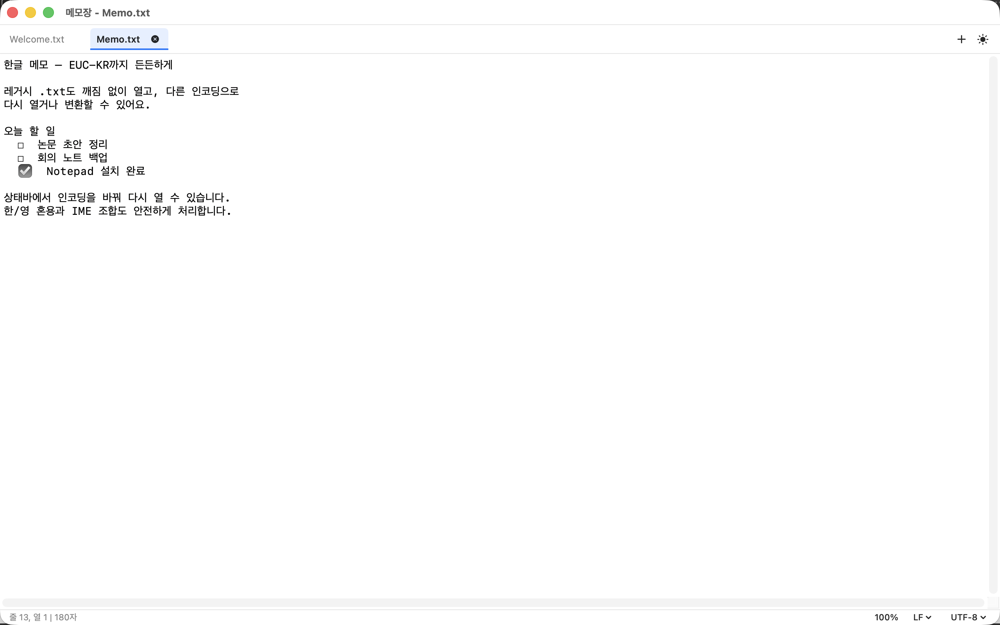
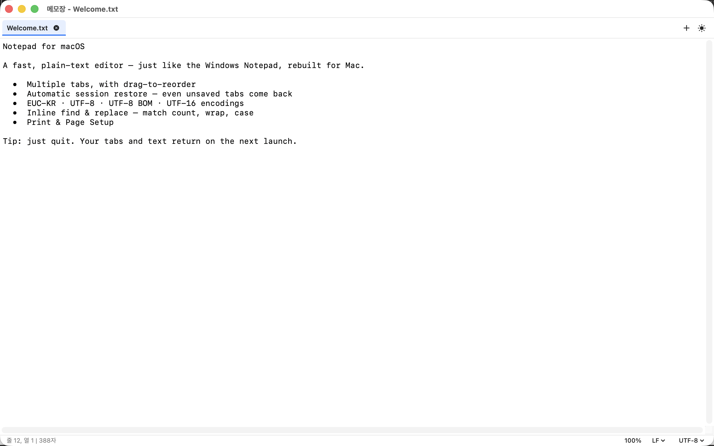

세션 복원.
저장하지 않은 탭까지 종료 전 상태로 복원합니다. 재시작이나 재부팅 후에도 이전 작업을 이어갈 수 있습니다.
Native macOS app
Notepad는 Windows 11 메모장의 익숙함을 macOS에 맞게 다시 만든 플레인 텍스트 편집기입니다. 탭, 세션 복원, EUC-KR까지 빠르게 다룹니다.
macOS용 SwiftUI + AppKit 네이티브 앱. App Store 제출용 개인정보 처리방침과 지원 페이지를 함께 제공합니다.

서식, 마크다운, 계정, AI 기능 없이 파일을 열고 쓰고 저장하는 기본기를 네이티브 앱답게 정돈했습니다.
저장하지 않은 탭까지 종료 전 상태로 복원합니다. 재시작이나 재부팅 후에도 이전 작업을 이어갈 수 있습니다.
한 창에서 여러 문서를 열고, 드래그로 순서를 바꾸고, Ctrl-Tab으로 빠르게 이동합니다.
UTF-8, UTF-8 BOM, EUC-KR, UTF-16 LE/BE를 열고 저장하며 상태바에서 다시 열기와 변환을 지원합니다.
작업 흐름을 막지 않는 인라인 찾기/바꾸기 막대에서 일치 개수, 둘러 찾기, 대소문자 옵션을 확인합니다.
줄로 이동, 시간/날짜 삽입, 자동 줄 바꿈, 확대/축소, 인쇄와 페이지 설정을 갖췄습니다.
SwiftUI와 NSTextView 기반으로 라이트/다크 모드, 샌드박스, 보안 스코프 파일 접근을 지원합니다.
Notepad는 plain text 전용입니다. 대신 탭과 미저장 문서를 안전하게 기억하고, 파일 접근 실패 시 빈 내용으로 자동 덮어쓰지 않습니다.

Notepad는 네트워크 연결, 광고, 추적, 데이터 수집 없이 동작하도록 설계되었습니다. 선택한 파일만 열고, 앱 샌드박스 안에서 작업합니다.